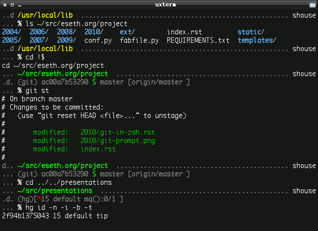

Easy multi-line prompts using Zsh arrays
This is a quick overview of my two- (sometimes three-) line Zsh prompt. It is built using Zsh arrays which makes the code extremely readable and mantainable. Each line of the prompt is an element in an array.
The code can be found on GitHub.
In addition, I wanted the faithful dog from NetHack to wander around my prompt as I work. If you have ever played NetHack then you know how useful a good pet can be. Well, this helpfulness also extends to marathon coding sessions.
Other than that the prompt should strive to be as minimalist as possible while still providing a wealth of information, as needed:
A step by step walkthrough. Be sure to have the following Zsh manpages handy.
To keep things short lets make some aliases for the colors we intend to use. (This will also help later when we strip all the color out of the prompt to determine how wide it is.) As per the recommendation for prompts on the Zsh wiki, we’re wrapping all our colors with %{..%}:
autoload -U colors && colors
local reset white gray green red
reset="%{${reset_color}%}"
white="%{$fg[white]%}"
gray="%{$fg_bold[black]%}"
green="%{$fg_bold[green]%}"
red="%{$fg[red]%}"
yellow="%{$fg[yellow]%}"
We’re going to store the elements that make up the top line in an array for now. The top line is the most complicated line of our prompt and that will be useful when determining how much padding we need for the full-width padding:
local -a infoline
Add an element to the array containing a color escape based on if the current directory is writable:
[[ -w $PWD ]] && infoline+=( ${green} ) || infoline+=( ${yellow} )
Add the escape to show the current directory & path and reset the color:
infoline+=( "%~ " )
infoline+=( "${reset} " )
Now add the current username:
infoline+=( "%n" )
If we’re ssh-ed into a machine, add the hostname:
[[ -n $SSH_CLIENT ]] && infoline+=( "@%m" )
We want the top line to run the full width of the terminal so we need to take the width of the terminal window and subtract the width of all the characters we have assembled so far. Unfortunately this can be a little tricky because color escapes count as non-zero width.
Since all our colors are already wrapped with %{..%} the easiest way to pull out the color is to do a simple search and replace for that wrapper. (The (S) tells it to search substrings.):
local i_width
i_width=${(S)infoline//\%\{*\%\}}
Great, all the color is gone. We need to expand all the escapes so that %~ gets expanded into ~/Pictures/lolcats/Superheroes (for example) and %n gets expanded to shouse. While we’re at it, lets also count how many characters are in the string:
i_width=${#${(%)i_width}}
$COLUMNS is automatically set to the width of the terminal window; finally, we can find the difference of the two variables and see how much filler we’re going to need:
local i_filler
i_filler=$(( $COLUMNS - $i_width ))
Then we can generate that filler; in this case we’re generating . characters with Zsh’s padding expansion:
local filler
filler="${gray}${(l:${i_filler}::.:)}${reset}"
Last we need to insert the filler into our array in the position we want. In this case we want it right in-between the %~ and the %n:
infoline[2]=( "${infoline[2]} ${filler} " )
Our top line is complete.
The top line is the hard one since it’s full-width. We’re almost done. We still need the actual prompt line and we also want a third line to display version-control status when we’re in a Git/Mercurial/et al repository.
Lets create a new array to hold each line in our prompt and add our top line as a string:
local -a lines
lines+=( ${(j::)infoline} )
Zsh has an awesome contrib module for pulling information from VCS repositories called vcs_info. You can read about it in zshcontrib(1).
See also
See also
When it detects that we are inside some VCS repository it fills the variable $vcs_info_msg_0_ so lets add that variable to our array only if it contains information:
[[ -n ${vcs_info_msg_0_} ]] && lines+=( "${gray}${vcs_info_msg_0_}${reset}" )
Now lets add the final line that contains the actual prompt:
lines+=( "%(1j.${gray}%j${reset} .)%(0?.${white}.${red})%#${reset} " )
Last, but not least, lets join all the array elements together in a string separating them with newlines:
PROMPT=${(F)lines}
That’s it! Pretty easy, huh?
All together, the code looks like this:
function setprompt() {
local -a lines infoline
local x i pet dungeon filler i_width i_pad
# A domestic animal, the _tame dog_ (_Canis familiaris_)
pet=d
### First, assemble the top line
# Current dir; show in yellow if not writable
[[ -w $PWD ]] && infoline+=( ${green} ) || infoline+=( ${yellow} )
infoline+=( "%~${reset} " )
# Username & host
infoline+=( "%n" )
[[ -n $SSH_CLIENT ]] && infoline+=( "@%m" )
# Strip color to find text width & make the full-width filler
zstyle -T ":pr-nethack:" show-pet && i_pad=4 || i_pad=0
i_width=${(S)infoline//\%\{*\%\}} # search-and-replace color escapes
i_width=${#${(%)i_width}} # expand all escapes and count the chars
filler="${gray}${(l:$(( $COLUMNS - $i_width - $i_pad ))::.:)}${reset}"
infoline[2]=( "${infoline[2]} ${filler} " )
### Now, assemble all prompt lines
lines+=( ${(j::)infoline} )
[[ -n ${vcs_info_msg_0_} ]] && lines+=( "${gray}${vcs_info_msg_0_}${reset}" )
lines+=( "%(1j.${gray}%j${reset} .)%(0?.${white}.${red})%#${reset} " )
### Add dungeon floor to each line
# Allow easy toggling of pet display
if zstyle -T ":pr-nethack:" show-pet ; then
dungeon=${(l:$(( ${#lines} * 3 ))::.:)}
dungeon[$[${RANDOM}%${#dungeon}]+1]=$pet
for (( i=1; i < $(( ${#lines} + 1 )); i++ )) ; do
case $i in
1) x=1;; 2) x=4;; 3) x=7;; 4) x=10;;
esac
lines[$i]="${gray}${dungeon[x,$(( $x + 2 ))]} ${lines[$i]}${reset}"
done
fi
### Finally, set the prompt
PROMPT=${(F)lines}
}
function precmd {
vcs_info
setprompt
}
Posted 1224 days ago on 2009-12-22.